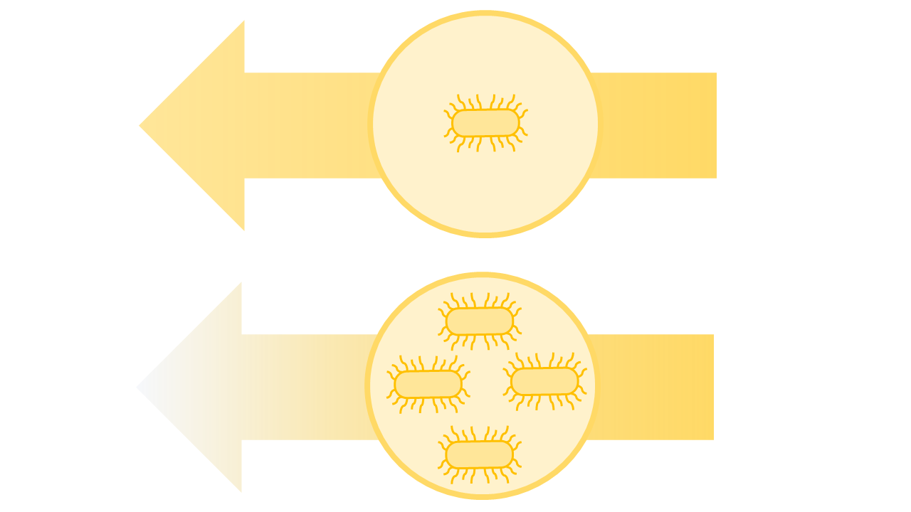
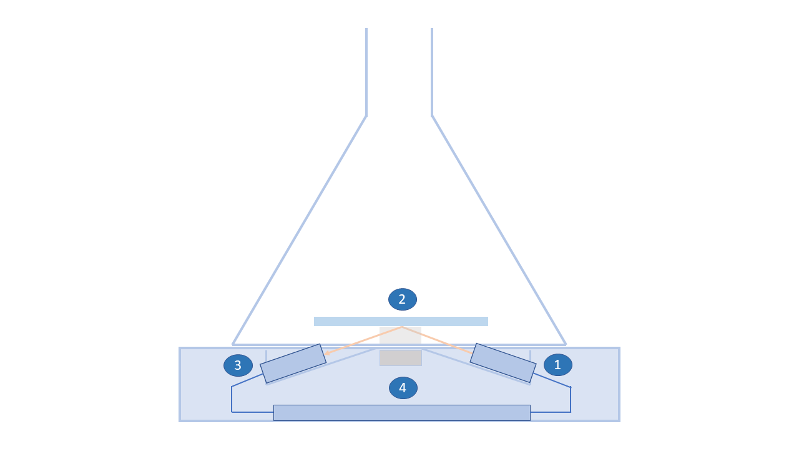
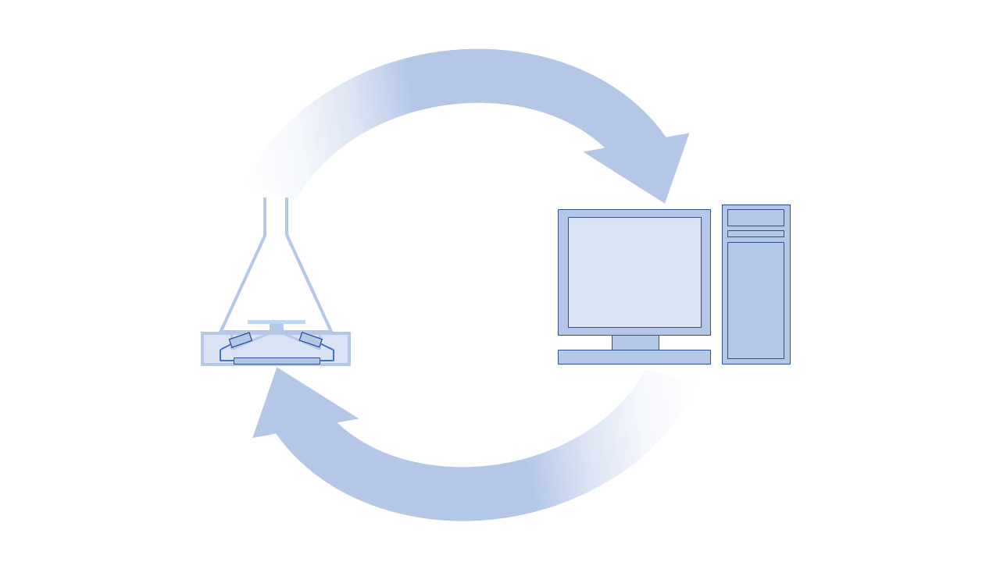
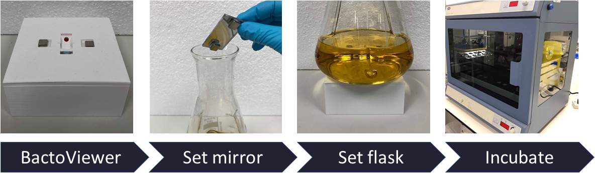

BactoView is utilizing its wide array of tools and expertise to engineer a platform for the real-time and precise measurement of cell density. Our first product, the BactoViewer, was designed to be effective but minimalistic and affordable.
The BactoViewer is a platform for the automated measurement of cell population within a flask culture. It quantifies cell population by measuring a culture's optical density (OD), a measure of the amount of light transmitted through a culture. Optical Density is a commonly used standard for the measurement of cell density, and thus results obtained from the BactoViewer are easily interpretable.
The Bactoviewer was designed with the needs of researchers in mind. Its main draw is its operability with standard flasks and shaking incubators. This circumvents the need for additional purchases and minimizes the training required to use the product effectively. The Bactoviewer interfaces wirelessly with a standard personal computer and is equipped with an intuitive GUI as well as data visualization features to facilitate data analysis. A customizable threshold-based alarm system makes the device suitable for protein induction experiments.
The BactoViewer can be purchased for £100, far below the price of competing products. This purchase includes the device, a copy of the software bundle as well as an instruction manual for the device. The device comes with a year-long guarantee as well as free technical support for up to 2 years.

When light passes through a culture, some of it gets scattered, resulting in less light detected on the other end. The amount of light dispersed increases with the amount of biomass in the culture, and hence the amount of light detected can be used as a measure of cell population.


A Bluetooth module sends data from the Arduino to a computer. Here, data is processed and stored. Depending on the requirements of the given experiment, the data may be visualized or used to sound a threshold-based alarm.
